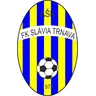

Posledný zápasU17 B Mladší dorast
 MTK Leopoldovdomáci
MTK Leopoldovdomáci PFK Piešťany U17 Bhostia
PFK Piešťany U17 BhostiaVýsledky prípraviek sa nezapisujú
PFK Piešťanyod roku 1912
Návrh webu · nie je to oficiálna stránka klubu
IV. liga U17 ObFZ Trnava, 3. miesto z 9
Posledný zápasU17 B Mladší dorast
MTK LeopoldovdomáciPFK Piešťany U17 BhostiaVýsledky prípraviek sa nezapisujú
4–0–3výhry, remízy a prehry vo všetkých súťažiach, skóre 25:20

FK AŠK SLÁVIA Trnava vonku, 17. kolo 17:00IV. liga U17 ObFZ Trnava
| # | Tím | Z | V | R | P | Skóre | B |
|---|---|---|---|---|---|---|---|
| 1 | 7 | 6 | 1 | 0 | 43:6 | 19 | |
| 2 | 7 | 6 | 0 | 1 | 31:7 | 18 | |
| 3 | 7 | 4 | 0 | 3 | 25:20 | 12 | |
| 4 | FK AŠK SLÁVIA Trnava | 7 | 3 | 2 | 2 | 13:7 | 11 |
| 5 | 7 | 3 | 1 | 3 | 21:16 | 10 | |
| 6 | 7 | 2 | 0 | 5 | 10:27 | 6 | |
| 7 | 7 | 1 | 0 | 6 | 4:35 | 3 | |
| 8 | 7 | 1 | 0 | 6 | 7:36 | 3 | |
| 9 | 0 | 0 | 0 | 0 | 0:0 | 0 |
Hráči, ktorí v kalendárnom roku 2026 nastúpili alebo boli v nominácii na zápas (podľa Sportnetu). Pri mládeži uvádzame len mená.